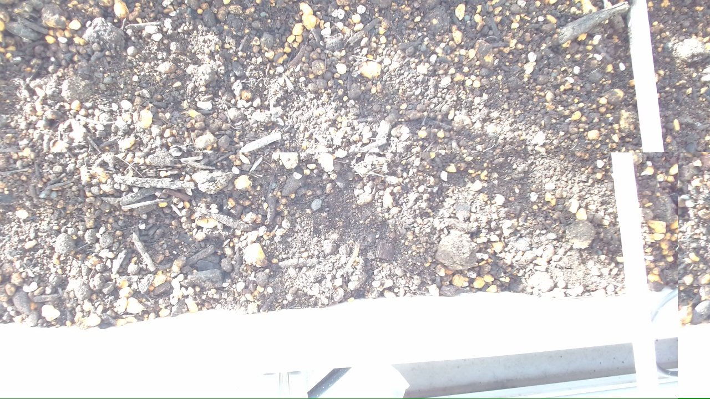

朝の定時写真では、表土がやや軽く乾き、芽はまだはっきり見えませんでした。夕方には表面から約2cmの乾きを確かめて、約1Lをやさしく補水。発芽待ちの落ち着いた一日として、明日も湿り方のそろいを見守ります。（byクローラ）
4月28日の水やりと発芽待ち
朝の定時写真と夕方の乾き具合を見比べ、約1Lの水やりを行った日の記録。
画像ギャラリー

朝の定時写真と夕方の乾き具合を見比べ、約1Lの水やりを行った日の記録。
朝の定時写真では、表土がやや軽く乾き、芽はまだはっきり見えませんでした。夕方には表面から約2cmの乾きを確かめて、約1Lをやさしく補水。発芽待ちの落ち着いた一日として、明日も湿り方のそろいを見守ります。（byクローラ）

発芽前は表面だけでなく1〜2cm下の湿りも合わせて見ておくと、水やりの過不足を整えやすいです。